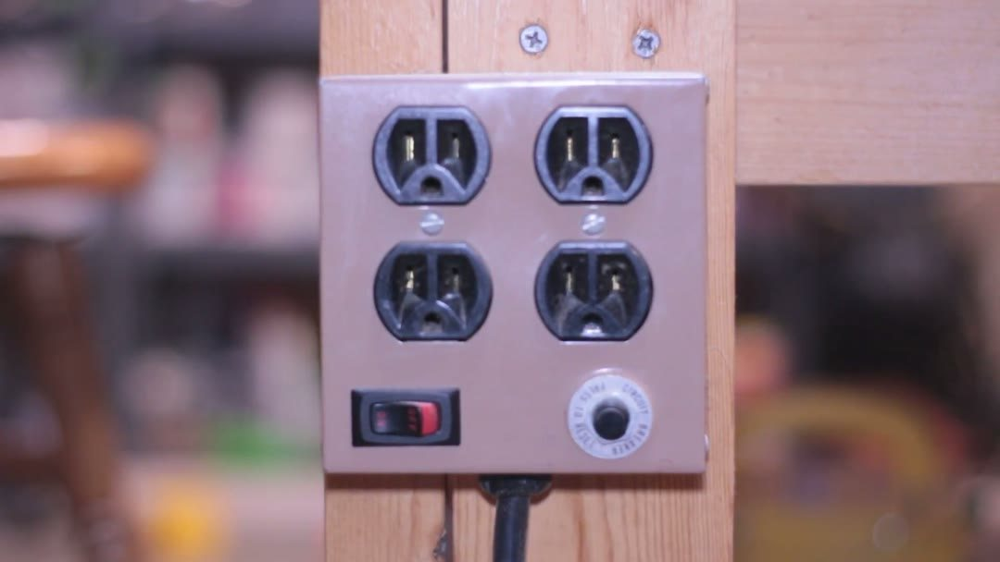
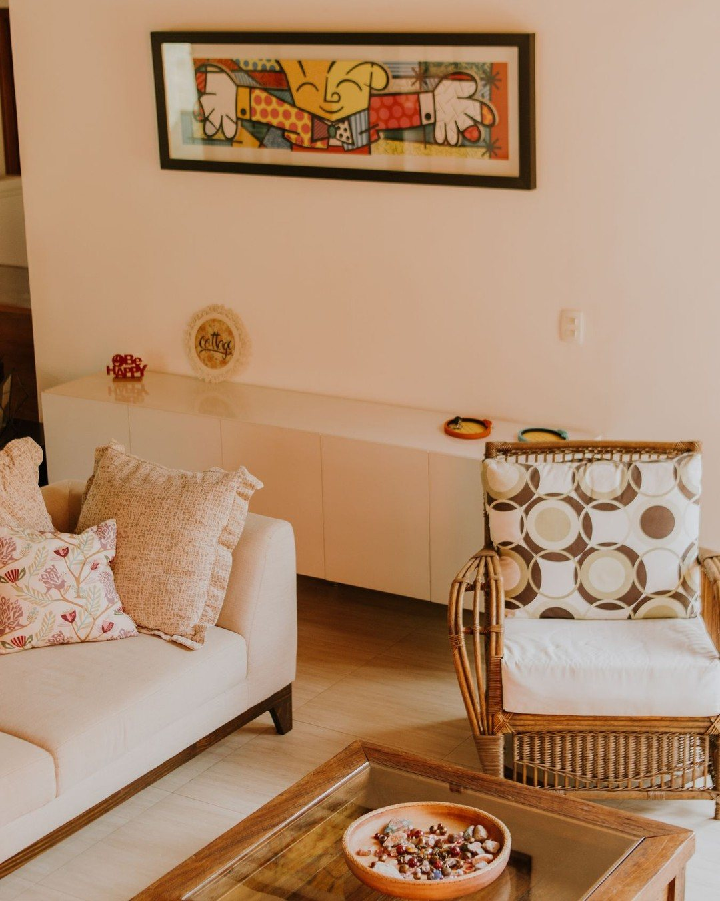
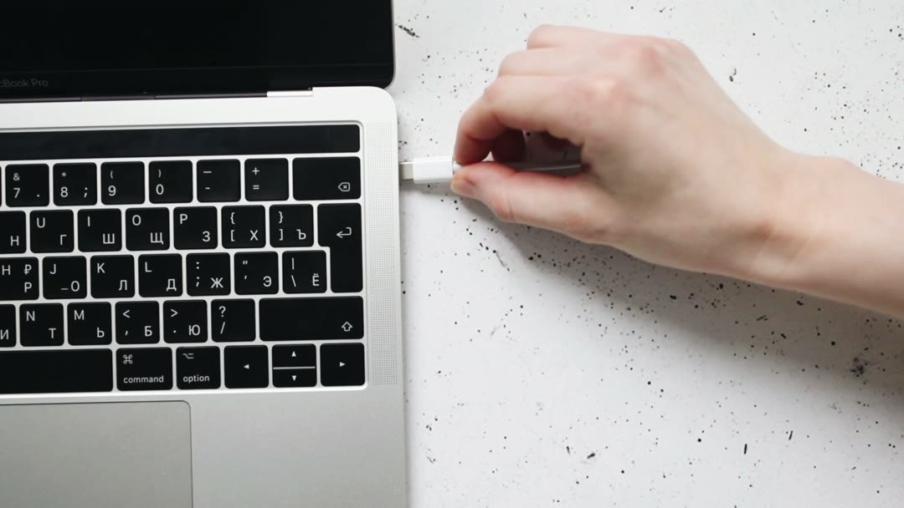
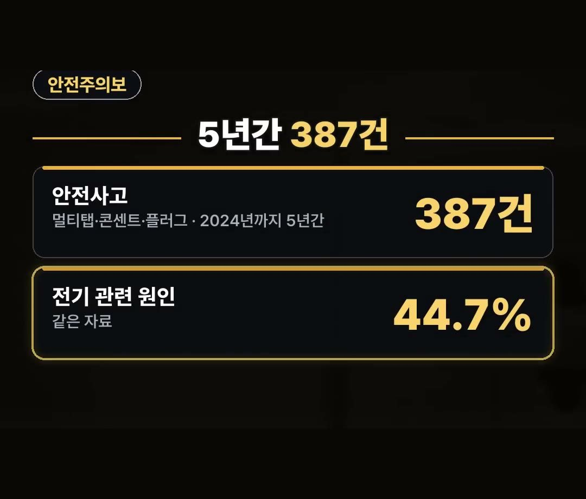
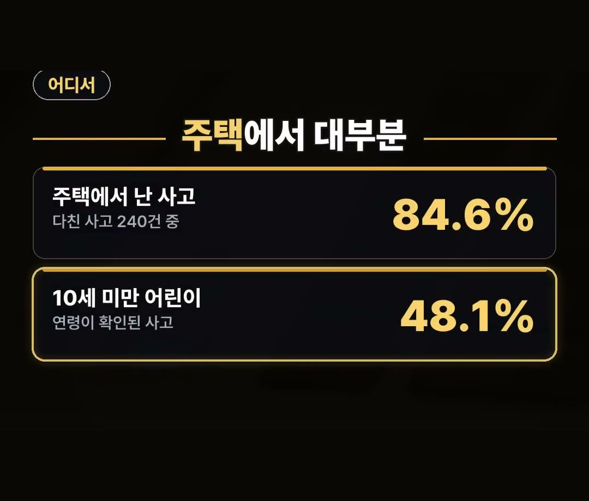
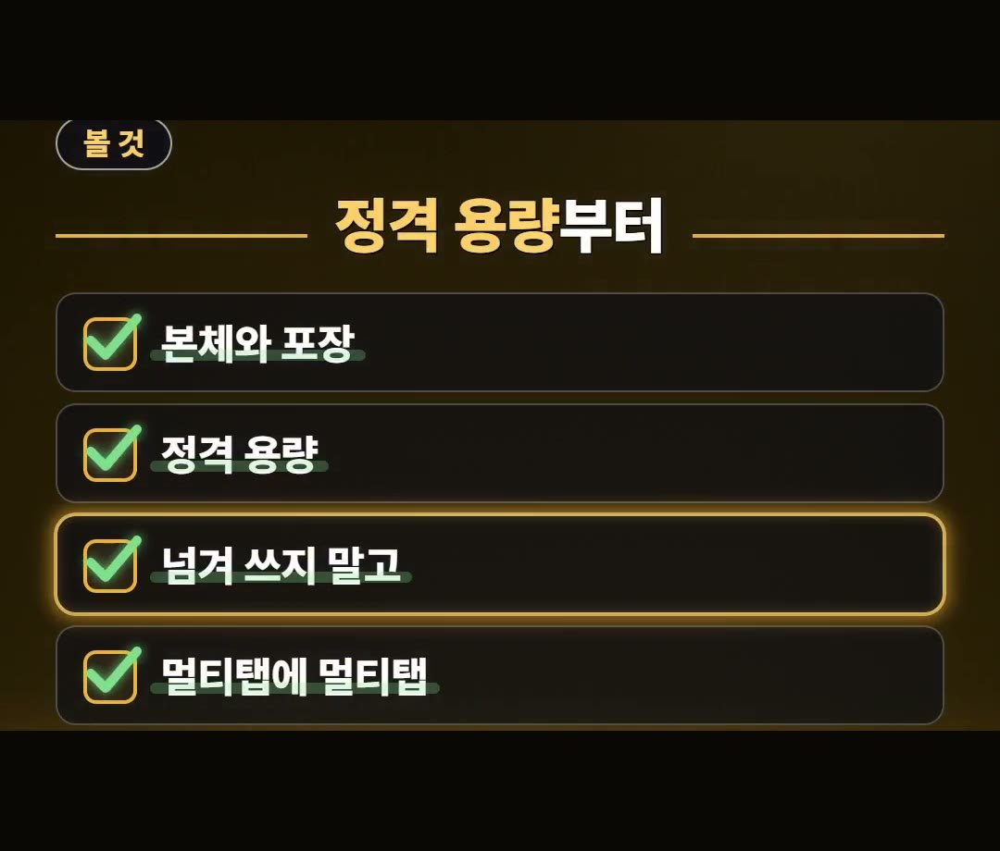
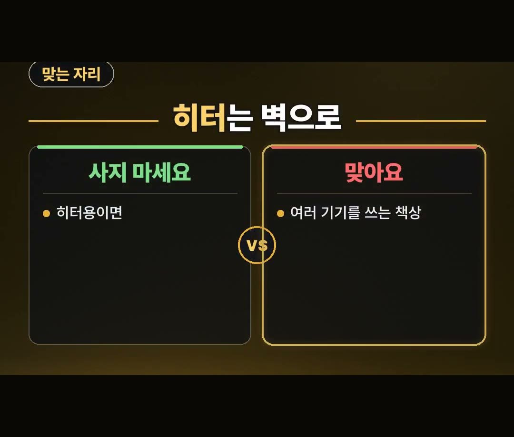

고용량 멀티탭 추천 및 사기 전에 확인해야 할 정격 용량과 위치
※ 이 글에는 제휴 링크가 포함되어 있으며, 링크를 통해 구매하시면 일정 수수료를 받을 수 있습니다. (가격은 같습니다)
※ 이 포스팅은 쿠팡 파트너스 활동의 일환으로, 이에 따른 일정액의 수수료를 제공받습니다.
※ 이 콘텐츠는 토스쇼핑 쉐어링크 활동의 일환으로, 링크를 통한 구매가 발생하면 일정 수수료를 지급받습니다.
날씨가 쌀쌀해지면서 난방 기기를 꺼내 책상 밑이나 침대 옆 멀티탭에 바로 꽂으려는 상황을 떠올려 보세요.
전기용품을 편리하게 연결하려고 구매를 고민하지만, 막상 어떤 기준으로 골라야 할지 난감할 때가 많습니다.
이번 글에서는 안전주의보 보도자료 내용과 정격 용량 확인법, 그리고 제품별 올바른 설치 위치를 차근차근 정리해 드리겠습니다.
2025년 9월 발표된 안전주의보에 따르면 2024년까지 5년간 멀티탭, 콘센트, 플러그 관련 사고가 387건이나 집계되었어요.
다친 사고 240건 가운데 84.6%가 주택에서 난 만큼, 가정 내 연결 방식을 제대로 아는 것이 무엇보다 중요하답니다 💡

멀티탭과 콘센트 사고 통계 분석
전기용품 사용량이 늘어나는 계절에는 관련 안전사고 소식을 접하곤 합니다.
소방청, 국립소방연구원, 한국소비자원, 국가기술표준원 등이 2025년 9월에 내놓은 멀티탭·콘센트·플러그 안전주의보 자료를 살펴보면 사고 상황을 구체적으로 알 수 있습니다.
해당 자료에 따르면 2024년까지 5년간 발생한 관련 사고는 총 387건입니다.
이 가운데 전기 관련 원인이 44.7%를 차지했습니다.

사고가 발생한 장소와 연령대 비중도 함께 발표되었습니다.
신체 손상이 발생한 다친 사고 240건 중에서 84.6%가 주택에서 난 사고였습니다.
또한 연령이 확인된 사고 자료를 보면 48.1%가 10세 미만 어린이로 조사되었습니다.
주택 내부에서 아이들이 생활하는 공간일수록 전기 기기 연결 상태를 점검하는 과정이 필요합니다.

고용량 멀티탭 추천 대상과 피할 용도
전기용품을 고를 때 고용량 멀티탭 추천 문구만 보고 전열기구를 꽂아도 된다고 생각하기 쉽습니다.
그러나 제품 명칭만 보고 판단하기보다는 사용할 기기의 소비전력을 먼저 확인해야 합니다.

자료에 따르면 에어컨이나 온열기처럼 소비전력이 높은 제품은 멀티탭이 아닌 벽면 전용 콘센트에 꽂아야 한다고 당부합니다.
따라서 히터용으로 쓸 목적이라면 멀티탭을 사지 않는 것이 바람직합니다.
반면 여러 전자기기를 함께 올려두고 쓰는 책상 환경이라면 고용량 멀티탭 추천이 알맞은 선택이 될 수 있습니다.

정격 용량 확인 기준과 올바른 연결 방법
전기 사고를 예방하려면 제품 구매 시 표기된 숫자부터 살펴보는 습관이 필요합니다.
고용량 멀티탭을 고를 때는 본체와 포장에 적힌 정격 용량을 먼저 확인해야 합니다.

정격 용량을 확인한 후에는 허용된 수치를 넘겨서 쓰지 않는 것이 기본 원칙입니다.
또한 멀티탭에 또 다른 멀티탭을 이어 붙여 사용하는 방식은 피하라는 당부가 포함되어 있습니다.
시중에 판매되는 제품 가운데는 상품 설명에 따르면 3구에 유에스비가 달린 4000와트 표기 제품도 있습니다.
이처럼 다양한 구성의 고용량 멀티탭이 존재하므로, 설치할 장소와 연결할 기기의 전력 소비량에 맞추어 적절한 규격을 고르는 것이 좋습니다.

정리
- 2025년 9월 소비자원 등 발표 자료 기준 2024년까지 5년간 사고 387건 중 전기 관련 원인이 44.7%이며 다친 사고 240건 중 84.6%가 주택 사고였습니다.
- 본체와 포장의 정격 용량을 확인하고 넘겨 쓰거나 멀티탭끼리 이어 잇지 말아야 합니다.
- 에어컨과 온열기 등 소비전력이 높은 기기는 벽면 전용 콘센트에 꽂고, 히터용 고용량 멀티탭 구매는 피해야 합니다.
제품 링크는 아래에 모아 두었어요.
📌 2026년 10월 기준 정보예요. 가격은 시기에 따라 달라질 수 있어요.
· 소방청·국립소방연구원·한국소비자원·국가기술표준원 멀티탭 안전주의보(2025년 9월) 보도자료 게재
· LG헬로비전 뉴스 (부산소방재난본부 멀티탭 실험 보도)
· 고용량 멀티탭 용량 정리 (2025년 9월 4일 발표 자료 인용)
사진·영상영상 화면: Pexels (Aghyad Najjar, I'm Zion, Jakub Zerdzicki, Max Vakhtbovych, Nothing Ahead, Pixabay)
사진: Pexels (juliane Monari)